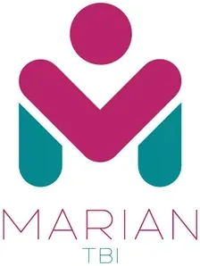

UIC MARIAN Technology Business Incubator
University of the Immaculate Conception (UIC) · Region XI
MARIAN TBI is the Technology Business Incubator of the University of the Immaculate Conception (UIC) in Davao City, established with DOST-PCIEERD funding of PHP 11.3 million under the Higher Education Institution Readiness for Innovation & Technopreneurship (HEIRIT) Program. Named as a backronym for “Mobilizing Advanced Research and Innovations to Advocate Nation-building,” MARIAN TBI focuses on nurturing health-technology startups and social enterprises that address the healthcare and wellness needs of Mindanao.
- Category
- Technology Business Incubator
- Host institution
- University of the Immaculate Conception (UIC)
- City
- Davao City
- Region
- Region XI
- Operating status
- Operating
About the Center
The University of the Immaculate Conception is a private Catholic university in Davao City known for its health sciences programs, including nursing, pharmacy, and medical technology. This academic strength gives MARIAN TBI a distinct advantage in health-tech incubation — connecting startups with health sciences faculty mentors, clinical networks, and biomedical research capabilities. The center has a dedicated website (mariantbi.uic.edu.ph) and Facebook page (facebook.com/mariantbi) reflecting its active engagement with the Davao startup community.
Programs & Services
- Health-Tech Startup Incubation — Specialized incubation for startups developing technology solutions for healthcare, wellness, pharmaceuticals, and medical devices
- DOST-PCIEERD Program Support — Access to DOST grants, technology commercialization programs, and the national innovation network through the HEIRIT framework
- Faculty & Clinical Mentorship — Guidance from UIC health sciences faculty, clinical professionals, and research experts in pharmacy, nursing, and allied health
- Business Development Coaching — Support for business model validation, financial projections, go-to-market planning, and pitch development for health-tech ventures
- IP & Regulatory Navigation — Assistance with IP filing and guidance on navigating FDA, PhilHealth, and other health-sector regulatory requirements
- Co-working Space — Innovation workspace on the UIC campus for incubatee startups and research teams
- Community Health Innovation — Incubation of social enterprises addressing public health, maternal health, and community wellness challenges in Mindanao
- Demo Day & Showcase Events — Regular investor-facing events connecting resident health-tech startups with potential funders and industry partners
Contact
Sources & references
- dost.gov.ph/knowledge-resources/news/78-2023-news/3301-dost-uic-open-p11-3m…
- uic.edu.ph/marian-tbi-grand-launching
- mariantbi.uic.edu.ph/about-us
Details are drawn from public records and the sources above, July 2026.
Startupreneur Innovation Hub · synced from the Notion catalog (July 2026) · status: published.